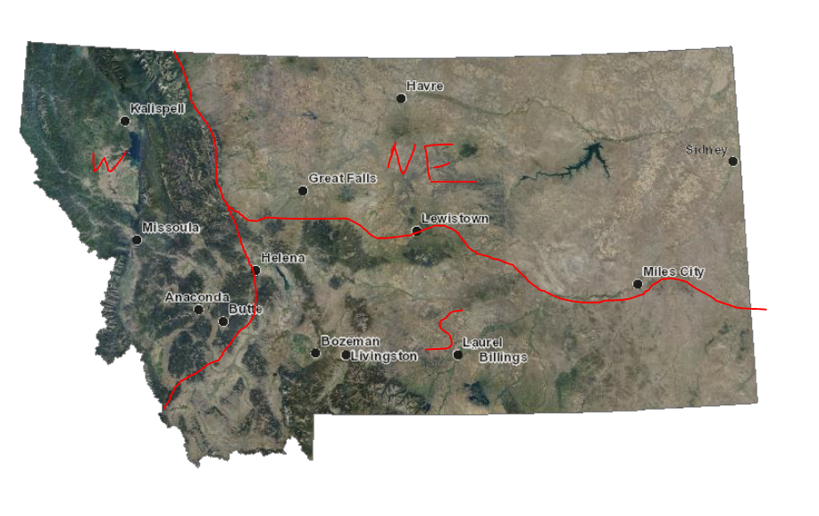
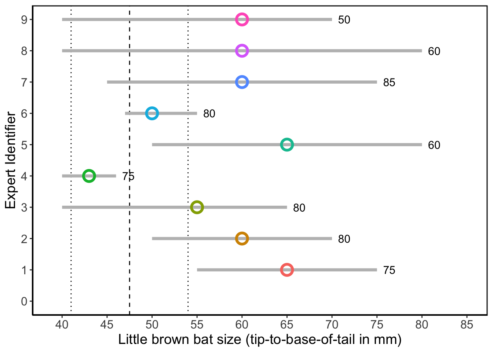
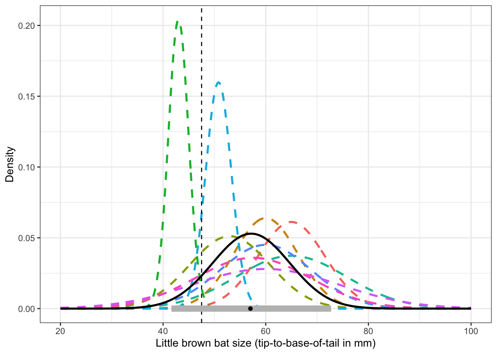
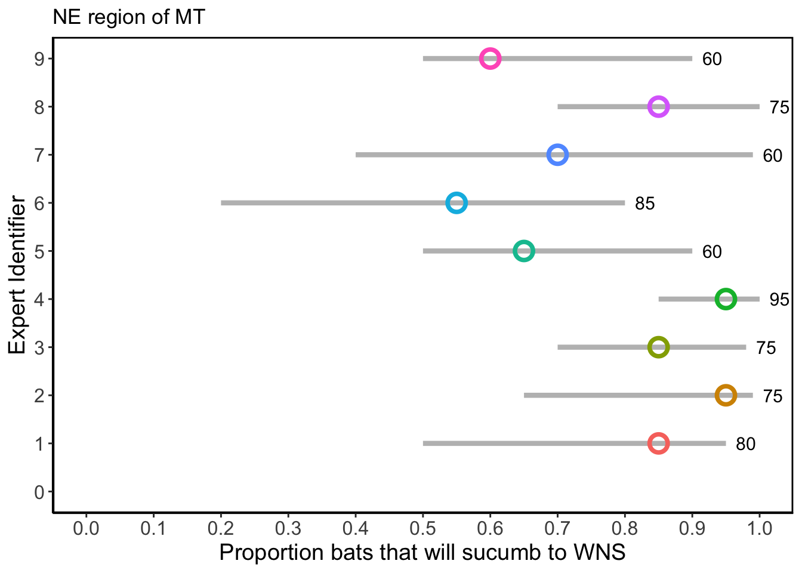
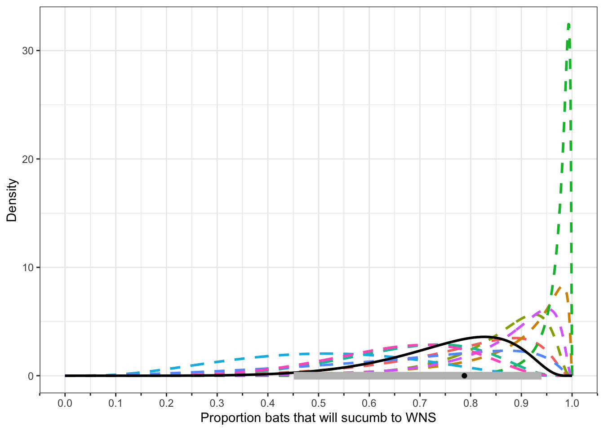
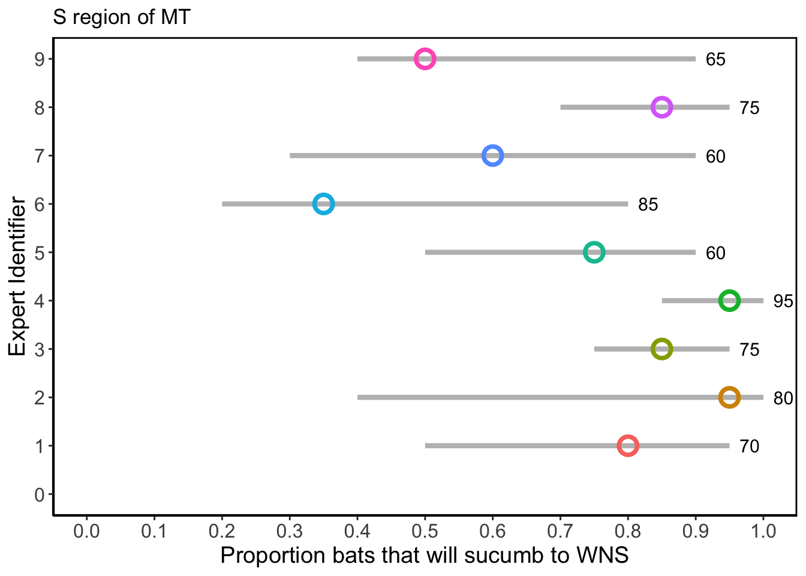
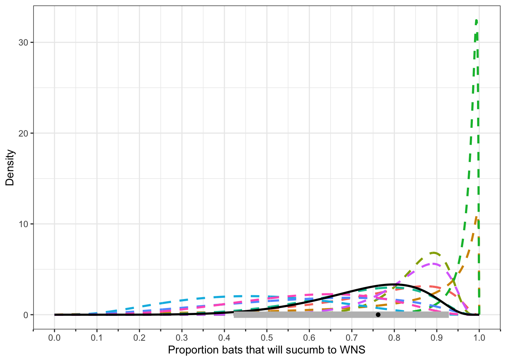
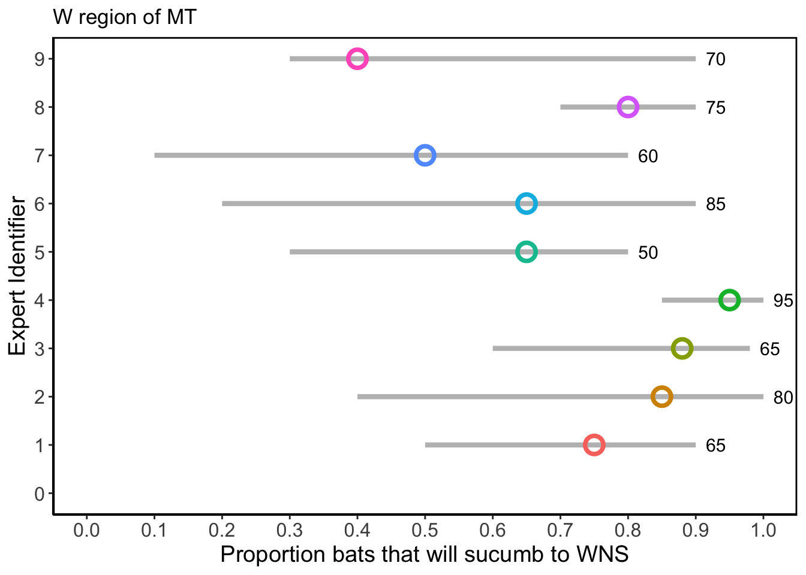
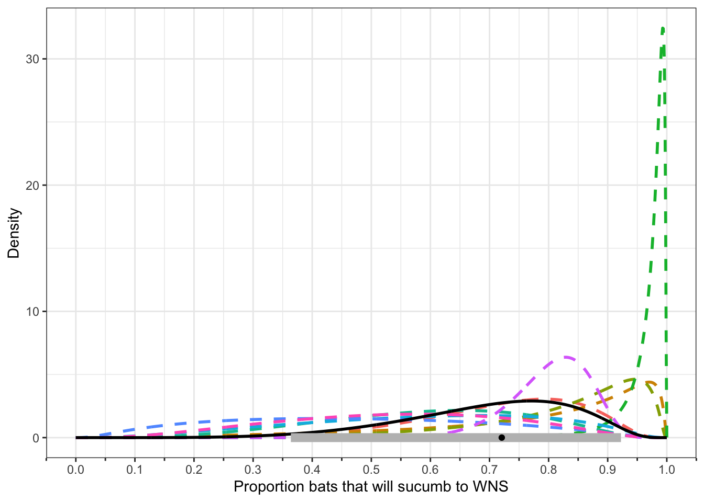

Expert Elicitation
Date: May 9th 2022
Bat survival to WNS in different regions of Montana
White Nose Syndrome (WNS), a fungal disease of bats caused by Pseudogymnoascus destructans (Pd), was detected in seven species of bats in eastern Montana in 2020-2021, and showed spread towards the west. Although the effects of WNS can be devastating to bat populations in the eastern United States, there is uncertainty regarding the risk for bats in Montana. There exists the possibility that bats in the west, in Montana, would face a similar population decline as in the eastern part of the United States. However, it is also possible that bats in Montana have a different outcome with Pd infection due to their genetics or the topographic ruggedness of their environment. Due to the landscape characteristics in Montana, bat behavior is also different and roosting occurs at lower densities across the landscape, perhaps altering the pathogen’s effect on bat populations.
Given the uncertainty in the outcome for bat populations infected with Pd we performed an expert elicitation session with 9 experts for bat populations in the western areas of the United States. We started a two hour discussion by asking the experts about all the potential factors that could play into Pd infections and determine bat survival. Several experts mentioned that they believed Pd would cause less drastic effects on western bat populations due to the landscape, since bats are spread out and not clustered in caves or mines. There was also concern regarding the lack of identified hibernacula in the west, and the uncertainty of how Pd would be transmitted in these rocky environments, in contrast to the known behavior associated to hibernacula humid conditions. Additionally, comparisons between the east and west areas for pathogen spread have shown slower spread in the west. A potential explanation is the topographic diversity that limits how bats move around and might spread the fungus.
Given the importance of the landscape, we asked experts to independently make predictions as to the effect of WNS on bat survival across three different biogegraphic regions in Montana (as shown in the map below). These three regions are based on the continental divide and rocky mountain front on the west, the northeastern area defined by everything north of the mountain ranges, and the southern region encompassing the xeric pine forest mountains and sagebrush steppe.

We used a standardized protocol for the expert elicitation where we developed a training question, and three additional questions regarding bat survival to WNS in the three biogeographic regions of Montana. We performed a four-point elicitation, in which each expert independently gave the lowest, highest, and best point estimates for the number of bats that would die due to WNS. The fourth point corresponded to the confindence each expert associated to their generated interval and how it would capture the true value for bat deaths. We discussed the experts estimates individually their aggregated distributions. OVerall, we observed that there was a lot of variation between the experts and across regions. Although during the discussion section of the process, it was mentioned that Pd might have less drastic effects for bats in the west, the estimates provided by the experts still show high probabilities of bats succumbing to the disease (median aggregated probabilities shown below each Plot2 for each question). Additionally, there is a big overlap in the estimates across regions, with the west region with slightly lower probabilities for bats dying from WNS, something that was mentioned in the discussion as being associated to the ruggedness of the terrain.
Training and Expert Calibration
During our expert elicitation session, we used the first part of the meeting to explain the process to all the experts. We used presented a training question regarding the average size tip to tail for the little brown bat, Myotis lucifugus. Several experts noted that this is not a common measurement that they are used to thinking about, given that when capturing bats they consider forearm length. We adjusted the question to the bat measurement from tip to base of tail, and asked experts to use their knowledge on other measurements, such as forearm length, to estimate the average size of a bat measured from head to base of the tail. The reference for the true value is the Montana Field Guide which listed the length of head and body from 41-54mm, thus we used the middle value of 47.5 as the truth. Based on the expert responses, 5 out of the 9 experts captured this true value within the intervals they provided, with varying degrees of confidence. Using the experts’ confidence, we calculated the expected number of experts that would have captured the true value for bat size within the interval they provided (6.45).
Training Question
What is the average size of the little brown bat (Myotis lucifugus)? If you were to measure 100 adult bats, tip-to- base of tail, at a site in the center of their range, what would the average length be in millimeters?
Plot 1
Plot of individual responses
Warning: Using `size` aesthetic for lines was deprecated in ggplot2 3.4.0.
ℹ Please use `linewidth` instead.Warning: The `size` argument of `element_rect()` is deprecated as of ggplot2 3.4.0.
ℹ Please use the `linewidth` argument instead.
Plot 2
Plot of individual distributions and mean aggregated response

Each expert’s response corresponds to a dashed colored line. The mean aggregate response is shown by the black curve. The vertical dashed line indicates the true answer based on the literature. At the bottom of the figure, the black dot represents the overall mean (57.149) for the responses, and the grey bar shows the 95% confidence interval (41.646, 72.102).
Question 1
Consider the Northeast (NE) region of Montana, as was shown in the map. In a randomly selected 5 by 5 mile grid cell of suitable habitat occupied by Myotis lucifugus, you randomly select 100 naive bats (i.e., they have not yet been exposed to Pd), how many of them would you expect to eventually succumb to white nose syndrome?
Plot 1
Plot of individual responses

Plot 2
Plot of individual distributions and mean aggregated response

Each expert’s response corresponds to a dashed colored line. The mean aggregate response is shown by the black curve. At the bottom of the figure, the black dot represents the median (0.788) for the responses, and the grey bar shows the 95% confidence interval (0.459, 0.938).
Question 2
Consider the South (S) region of Montana, as was shown in the map. In a randomly selected 5 by 5 mile grid cell of suitable habitat occupied by Myotis lucifugus, you randomly select 100 naive bats (i.e., they have not yet been exposed to Pd), how many of them would you expect to eventually succumb to white nose syndrome?
Plot 1
Plot of individual responses

Plot 2
Plot of individual distributions and mean aggregated response

Each expert’s response corresponds to a dashed colored line. The mean aggregate response is shown by the black curve. At the bottom of the figure, the black dot represents the median (0.758) for the responses, and the grey bar shows the 95% confidence interval (0.421, 0.929).
Question 3
Consider the West (W) region of Montana, as was shown in the map. In a randomly selected 5 by 5 mile grid cell of suitable habitat occupied by Myotis lucifugus, you randomly select 100 naive bats (i.e., they have not yet been exposed to Pd), how many of them would you expect to eventually succumb to white nose syndrome?
Plot 1
Plot of individual responses

Plot 2
Plot of individual distributions and mean aggregated response

Each expert’s response corresponds to a dashed colored line. The mean aggregate response is shown by the black curve. At the bottom of the figure, the black dot represents the median (0.722) for the responses, and the grey bar shows the 95% confidence interval (0.37, 0.93).